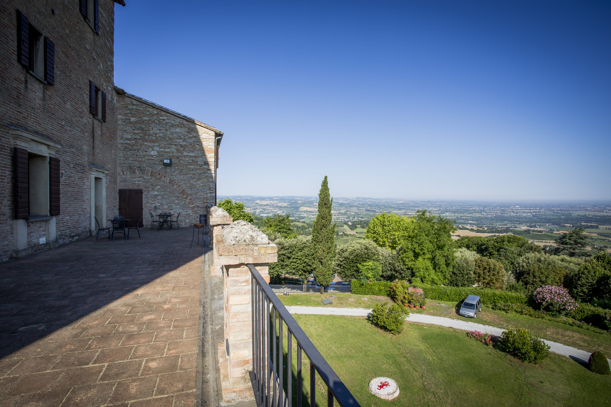
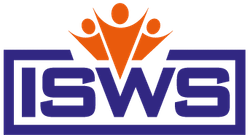

While the school is in excellent health, the rapid evolution of AI and Knowledge Engineering requires a fundamental curriculum update. This June, our senior tutors will meet for a dedicated workshop to reshape our scientific program for the next 5–6 years, ensuring we continue to offer cutting-edge training for your PhD students.
Thank you for your support, and see you in Summer 2027!
Applications in Autumn 2026